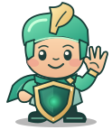

Focus Block Guide
Start a Focus Block

Step 1 · Extension
Install Fokasu extension from here.
Browser support: Chrome, Brave, other Chromium browsers, and Firefox are supported. Other browsers are closed while a block is active.
If a Focus Block is active and the extension is not installed or enabled, Fokasu detects it and closes the browser after a grace period (60 seconds by default).


Step 3 · Focus goal
Open the Fokasu desktop application and click the lock icon.
Click the lock icon in the header (beside the online status information) to begin setting up your focus goal.

Step 4 · Focus settings
Set your focus time.
Choose how long you want to focus. If this is your first run, try a one-minute commitment to learn the flow.
Optional break reward: Choose a percentage of each completed todo to receive as break time.
Schedule it for later: If you tend to procrastinate, schedule the Focus Block to start later—15 minutes from now, for example—instead of starting it immediately.


Step 5 · Block active
The sidebar shows that your Focus Block is running.
The progress bar begins at zero and grows as completed todo time counts toward your focus goal.
Step 6 · Block list
Add the websites you want out of reach.
Open Block from the sidebar, enter a website or
keyword, then select the plus button. For example,
reddit.com blocks Reddit.
Exceptions and wildcards: Use the exception list when part of a blocked website should remain available.
For example, block reddit.com, then add
reddit.com/r/* as an exception. The *
wildcard matches anything that comes after /r/.
Block the entire internet: Adding only *
to your block list blocks all the websites in your browser.
Set up your exception list first so the websites you need remain available.

Step 7 · Try it
Open the site. Fokasu stops it.
The block page confirms that your focus session is active. Even if you quit Fokasu or restart your computer, the block remains enforced.
While locked: You can add to the block list and remove from the exception list, but not weaken either list.

Finish a Focus Block
Step 8 · Create a todo
Give the todo an estimated focus time.
Create a todo from the sidebar's Create button or shortcut Ctrl + Shift + T.
Automatic breaks: When automatic breaks are enabled for a todo, blocked websites and applications become available during each break, then are blocked again when the break ends.

Step 8 · Earn progress
Complete the todo to advance your focus goal.
Start the todo and finish its focused time. Once completed, the completed time contributes to the committed focus time.

Optional
Settings · Preferences
Fine-tune protection and application behavior.
Open Settings to adjust these optional safeguards and desktop preferences.